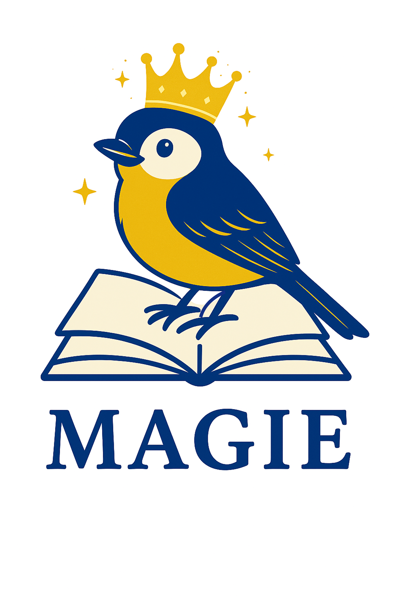

Gemeinsam lesen
Märchen & Geschichten
Je nach Studiengruppe lesen Sie ausgewählte Texte mit Ihrem Kind oder beginnen mit den bereitgestellten Materialien zu einem späteren Zeitpunkt.
MAGIE · Märchen- und Geschichtenstudie
Gemeinsam vorlesen, über Gefühle sprechen und die Forschung unterstützen: Wir möchten herausfinden, wie Kinder Märchen und Geschichten erleben.
Eine Interessensbekundung verpflichtet Sie noch nicht zur Teilnahme.

Gemeinsam lesen
Je nach Studiengruppe lesen Sie ausgewählte Texte mit Ihrem Kind oder beginnen mit den bereitgestellten Materialien zu einem späteren Zeitpunkt.
Spielerisch teilnehmen
Zu Beginn und am Ende untersuchen wir auf spielerische Weise ausgewählte Fähigkeiten Ihres Kindes.
Als Dankeschön
Für jeden Untersuchungstermin erhalten Sie CHF 20. Ausserdem sind MAGIE-Märchenbücher für teilnehmende Familien vorgesehen.
Der Ablauf
Die Studie begleitet Familien über acht Wochen. Sie besteht aus zwei spielerischen Erhebungen und einer begleiteten Phase zuhause.
Melden Sie sich unverbindlich. Wir informieren Sie über die Teilnahme und das weitere Vorgehen.
Ihr Kind nimmt an einer spielerischen Erhebung teil. Die Zuteilung zur Studiengruppe erfolgt zufällig.
Je nach Gruppe erhalten Sie unterschiedliche Leseaufgaben oder beginnen erst später. Ihre Leseeinheiten halten Sie kurz fest.
Zum Abschluss folgt eine zweite spielerische Erhebung mit Ihrem Kind.
Wir vergleichen drei zufällig zugeteilte Studiengruppen. Dazu gehört auch eine Wartegruppe: Diese Familien beginnen mit den vorgesehenen MAGIE-Materialien erst nach einer Wartephase. Ihr Beitrag ist für die Forschung genauso wichtig.
Gut zu wissen
Sie sind noch unsicher? Hier finden Sie Antworten auf die wichtigsten Fragen.
Wir suchen Familien mit einem Kind im Alter von 4 bis 7 Jahren. Weitere Einzelheiten zu den Teilnahmebedingungen erhalten Sie auf Anfrage.
Nein. Welche Texte Sie im Rahmen der Studie erhalten und wann Sie damit beginnen, hängt von Ihrer zufällig zugeteilten Studiengruppe ab. In einer Wartegruppe beginnen Familien mit den MAGIE-Materialien erst später.
Die Studie dauert acht Wochen und umfasst zwei spielerische Untersuchungstermine. Zuhause halten Sie Leseeinheiten kurz fest. Welche zusätzlichen Leseaufgaben anfallen, hängt von der Studiengruppe ab.
Nein. Zunächst erhalten Sie die detaillierten Studieninformationen. Danach können Sie entscheiden, ob Sie an der Studie teilnehmen möchten.
Wissenschaftlicher Hintergrund
Geschichten laden dazu ein, in andere Perspektiven einzutauchen und über Gefühle zu sprechen. Im Projekt MAGIE untersuchen wir, wie Kinder Gefühle und Perspektiven von Figuren verstehen und welche Rolle das gemeinsame Lesen und die Gespräche darüber spielen.
Für das Projekt wurden klassische Märchen gemeinsam mit Citizen Scientists behutsam für die Gegenwart weiterentwickelt. Nun möchten wir erforschen, wie Familien diese und andere Geschichten erleben. Ob und wie sich das emotionale Verständnis von Kindern verändert, ist eine offene Forschungsfrage.
Wer steckt dahinter?
Wir freuen uns über Ihr Interesse
Schreiben Sie uns ganz unverbindlich. Wir senden Ihnen die ausführlichen Informationen zur MAGIE-Studie.
Kontakt: magie@ub.uzh.ch
Bitte senden Sie über das Formular keine sensiblen Gesundheitsdaten Ihres Kindes.
Wir benötigen zunächst nur wenige Angaben.
Das Formular öffnet eine vorbereitete Nachricht in Ihrem E-Mail-Programm. Sie müssen die E-Mail noch selbst absenden. Alternativ können Sie direkt an magie@ub.uzh.ch schreiben.
Unterstützt durch die Universitätsbibliotheken Zürich und Basel, den Citizen Science Grant Zürich sowie die Schweizerische Märchengesellschaft.